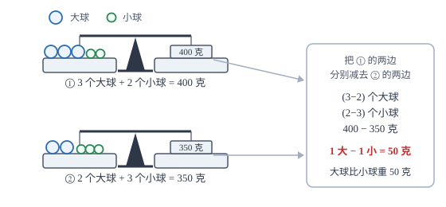

二元一次方程组
两个未知数需要两个方程才能定下来；解法的核心是消元——把两个方程合起来用，先消掉一个未知数。
| 所属主题 | 方程与不等式 |
|---|---|
| 所属模块 | 代数 |
| 课标学段 | 第四学段（7~9 年级） |
| 前置知识 | 一元一次方程 |
| 核心素养 | 运算能力模型观念 |
教材定位
人民教育出版社《人教版（2024版）义务教育教科书·数学》
七年级下册第10章 二元一次方程组10.1 二元一次方程组的概念10.2 消元——解二元一次方程组
对应七下 10.1 与 10.2：概念在 10.1，代入消元法与加减消元法在 10.2。
说明
含有两个未知数、并且含未知数的项的次数都是 1 的方程叫二元一次方程，它的一般形式是 ax+by=c（a、b 不同时为零）。单独一个二元一次方程有无数多组解，因为给定 x 的任何一个值，都能算出一个对应的 y。把两个二元一次方程合在一起，就得到二元一次方程组，它的解是两个方程公共的那一组值，通常记作 \begincasesx=\ldots\\ y=\ldots\endcases 的形式。
两个未知数需要两个独立的条件，这是方程组有唯一解的直觉来源。条件是否「独立」，可以直接从系数看出来：把两个方程写成 a_1x+b_1y=c_1 与 a_2x+b_2y=c_2。若 \dfraca_1a_2=\dfracb_1b_2≠\dfracc_1c_2，两条约束互相矛盾，方程组无解；若三个比全部相等，后一个方程只是前一个两边乘了同一个数，没有带来新信息，方程组有无穷多组解；若两个未知数的系数比不相等，两条约束彼此独立，方程组恰有一组解。等学了一次函数，这三种情形会各对应一种图象位置关系（相交、平行、重合），那时再回来看，会更容易记住。
使用场景
当题目里有两个未知量、并且给出两条关于它们的等量关系时，就设两个未知数、列方程组。典型情形是「两种物品的数量与总价」「两种票价与总人数」「两个数的和与差」。判断该不该用方程组，看条件个数：两条独立条件配两个未知数，正好。
当题目给出的两个量与时间、速度有关时，方程组也很好用。相向而行与同向而行的行程问题，本质上是「两人速度和」与「两人速度差」两个条件；顺水逆水问题则是「静水速度加水速」与「静水速度减水速」。把这两个条件写成两个方程，解出两个速度，题就做完了。
注意点
加减消元前，必须先把同一个未知数的系数化成相同或互为相反数，而且要把整个方程（包括常数项）一起乘。只乘含未知数的项、忘了乘常数项，是这一章最常见的计算错误。
求得一个未知数的值后，必须回代求出另一个，并写成有序的形式。答案要写清哪个值对应哪个未知数：设篮球单价为 x、足球单价为 y，就不能把两个数写反。最后代回原方程组的两个方程都检验一遍，只检验一个方程不够。
证明

图 1：两次称量各自平衡，读数相减仍是等式——「①-②」两边分别相减，一个未知数就被消掉了
证明
结论 1两个等式可以「左减左、右减右」，得到的新等式仍然成立——这是加减消元的依据。
加减消元为什么可行：设两个方程同时成立：3x+2y=400 与 2x+3y=350。由等式性质，两个等式的左边减左边、右边减右边，结果仍然相等，于是 (3x+2y)-(2x+3y)=400-350，即 x-y=50。一个未知数被消掉了，剩下的一元一次方程立刻能解。
关键一步依据是等式的可加减性（等式两边同时减去同一个式子，等式仍成立），作用在两个等式上就是「左减左、右减右」。相减后 3x 与 2x 合并成 x、2y 与 3y 合并成 -y，未知数由两个降到一个，所以这个动作是真正的「降次」而不是凑数。
结论 2系数相同就相减、系数互为相反数就相加，否则先乘适当的数把系数调成相同或相反。
如果两个方程的同一个未知数系数相同，相减就消掉它；系数互为相反数，相加就消掉它；系数既不相同也不相反，就先把某个方程（或两个方程）乘适当的数，把系数调成相同或相反。这个过程叫「加减消元」，它的合法性完全来自等式的可加减性。
关键一步依据是等式性质二（两边同乘同一个不为零的数，等式仍成立）：乘数只用来把系数凑成相同或相反，凑好后相减相加以 0 消掉该项。等式性质二保证乘过的方程与原方程同解，所以消元不丢解。
结论 3代入消元法：若一个方程能写成 y=2x+1，就可以在另一个方程里用 2x+1 替换 y。
代入消元：若一个方程能写成 y=2x+1 的形式，那么在任何满足这个方程的地方，y 都可以换成 2x+1。把它代入另一个方程，另一个方程就只剩 x 了。这叫「等量代换」，依据是同一个量可以用与它相等的式子替换。
关键一步依据是等量代换：y=2x+1 说明两式在同时成立的地方取同一个值，所以替换后得到的新方程与原方程组同解。前提是把某个方程先整理成「用 x 表示 y」的形式，否则替换无法进行。
结论 4加减消元与代入消元的共同目标都是把两个未知数降成一个，选哪一条要看哪个更省事。
两种消元的共同目标只有一个：把两个未知数降成一个。选哪种，取决于哪个更方便——有系数为 1 或 -1 的未知数时，代入最省事；系数成倍数关系时，加减最省事。
关键一步依据是「降未知数个数」这一标准本身：消元之后必须得到一元一次方程才可解。系数为 1 或 -1 时代入一步就把一个未知数整体消掉；系数成倍数关系时乘一个数再相减最快。所以选法由系数结构决定，不是习惯。
结论 5消元不改变解：相减得到的新方程仍然经过原来两条直线的交点。
从图形上理解：消元相当于求两条直线的交点。两个方程各是一条直线，「相减」得到的新方程也是一条直线，它经过原来的交点——所以消元不会改变解，只是换了一个更容易读的角度。
关键一步依据是交点的定义：原方程组的解就是两条直线的公共点，它同时满足两个方程，所以在相减后的新方程里也成立。新方程只是把同一个点换用另一条直线来表达，信息既没有增加也没有丢失。
动手实验
用两次称量做实验：第一次称「3 个大球 +2 个小球 =400 克」，第二次称「2 个大球 +3 个小球 =350 克」。把第一次的读数减去第二次的读数，得到「1 个大球 -1 个小球 =50 克」，即大球比小球重 50 克。再把这个关系代回任一次称量，就能算出单个重量：大球 100 克、小球 50 克。两次称量相减，正是加减消元在现实中的样子（见图 1）。
解题思路
拿到方程组先观察系数，再决定方法。只要某个未知数的系数是 1 或 -1，就用代入消元：把它写成「一个未知数 = 含另一个未知数的式子」，整体代入另一个方程。若两个方程中同一个未知数的系数相等或互为相反数，用加减消元；若成整数倍，先把方程乘适当倍数再加减。两种方法都能解，选省事的那种。
加减消元的操作要点：选定要消去的未知数；把它的系数化成绝对值相等；系数同号则相减、异号则相加；解出剩下的未知数；回代求另一个。整个过程要写清「① × 2 得……」这样的步骤，否则乘错、加错都无从追查。
解完写答案时用「\begincases\endcases」的形式成组写出，并把两个方程都代一遍。应用题还要回到实际情境检查：单价不能为负、人数必须是正整数、时间要符合常识。这些检查经常能发现「方程列对了但解错了」或「设的未知数含义搞反了」。
按场景的例题
例 1（场景：竞技与游戏） 鸡兔同笼问题
笼子里有鸡和兔共 35 只，共有 94 条腿。鸡和兔各有多少只？
解：设鸡有 x 只、兔有 y 只。由头数得 x+y=35，由腿数得 2x+4y=94。用代入法：由第一个方程得 x=35-y，代入第二个方程得 2(35-y)+4y=94，即 70-2y+4y=94，2y=24，y=12。回代得 x=35-12=23。检验：23+12=35 个头，23× 2+12× 4=46+48=94 条腿，两个条件都满足。
答：鸡有 23 只，兔有 12 只。
例 2（场景：销售与利润） 两种球类单价的计算
买 3 个篮球和 2 个足球共 400 元；买 2 个篮球和 3 个足球共 350 元。篮球和足球的单价各是多少元？
解：设篮球单价 x 元、足球单价 y 元，得 \begincases3x+2y=400\\ 2x+3y=350\endcases。两式相加得 5x+5y=750，即 x+y=150；两式相减得 x-y=50。再由 \begincasesx+y=150\\ x-y=50\endcases 相加得 2x=200，x=100；回代得 y=50。检验：3× 100+2× 50=400，2× 100+3× 50=350，都成立。
答：篮球 100 元一个，足球 50 元一个。
例 3（场景：行程与速度） 相向与同向两种走法求两人速度
甲、乙两人相距 36 千米。若同时出发相向而行，2 小时后相遇；若同时出发同向而行，6 小时后甲追上乙。求两人的速度。
解：设甲的速度为 x 千米/时、乙为 y 千米/时（x>y）。相向而行时两人合走 36 千米：2(x+y)=36，即 x+y=18。同向而行时甲比乙多走 36 千米：6(x-y)=36，即 x-y=6。两式相加得 2x=24，x=12；回代得 y=6。检验：相向 2 小时合走 2× 18=36 千米；同向 6 小时甲走 72 千米、乙走 36 千米，正好追上，符合。
答：甲的速度是 12 千米/时，乙的速度是 6 千米/时。
常用推论
方程组的两式相加（或相减）得到的新方程，常能直接给出两个未知数的和或差。例 2 中相加得 x+y=150、相减得 x-y=50，比直接消元更快。看到系数「对称」的方程组，先试试相加与相减。
若方程组的解满足某个附加条件（如 x+y=0 或 x=y），把附加条件与原方程组中的某一个方程联立求解即可，不必先解出完整的解。这类「含参方程组」题的关键是：附加条件本身也是一个方程。
同一个二元一次方程对应一条直线，因此「方程组无解」等价于「两直线平行」，「有无数多组解」等价于「两直线重合」。判断含参方程组解的情况时，可以比较两个方程的系数比：a_1/a_2=b_1/b_2≠c_1/c_2 时无解。
易错点
错解 \begincases3x+2y=400\\ 2x+3y=350\endcases 时，把第一个方程乘 2 得 6x+2y=400。
为什么错只把 3x 乘了 2，另外两项没有乘。方程两边必须同时乘同一个数，否则方程被改掉了。
正确第一个方程乘 2 应得 6x+4y=800，常数项也要乘。
错求出 x=100 后直接写「篮球 100 元、足球 100 元」，没有回代。
为什么错只解出了其中一个未知数就下结论。两个未知数必须各求出一个值，并且用另一个方程回代核对。
正确把 x=100 代入 3x+2y=400：300+2y=400，得 y=50。答案要成组写出：篮球 100 元、足球 50 元。
错解出 x=12、y=6 后，回答「乙的速度 12 千米/时，甲的速度 6 千米/时」。
为什么错把两个值对应错了。设的是「甲为 x、乙为 y」，答案必须按设的顺序写回，否则整道题的结论就反了。
正确甲 12 千米/时、乙 6 千米/时。写答案前回看一眼设未知数的那句话。
直观理解
一个二元一次方程只是一条约束：它规定了 x 与 y 之间的一种固定搭配，给定 x 一个值，y 就被这条约束算定了，所以单独看它，答案有无穷多组——但每一组都只保证「这一条成立」。两个方程就是两条约束，第二个要在第一个给出的无穷多组候选里再挑一遍，一般只有一组能同时满足两边，这就是唯一解。什么时候挑不出来？两条约束互相矛盾时，比如 x+y=5 与 x+y=7：同一件事被要求等于两个不同的数，无解。什么时候挑出一大堆？两条约束其实是同一条，比如 x+y=5 与 2x+2y=10，后一条只是前一条两边乘 2，没有带来任何新信息，于是无穷多组解。消元做的事，就是把两条约束合成一条：加减之后让某个未知数的系数变成 0，约束里只剩下一个未知数，一组值立刻能读出来。